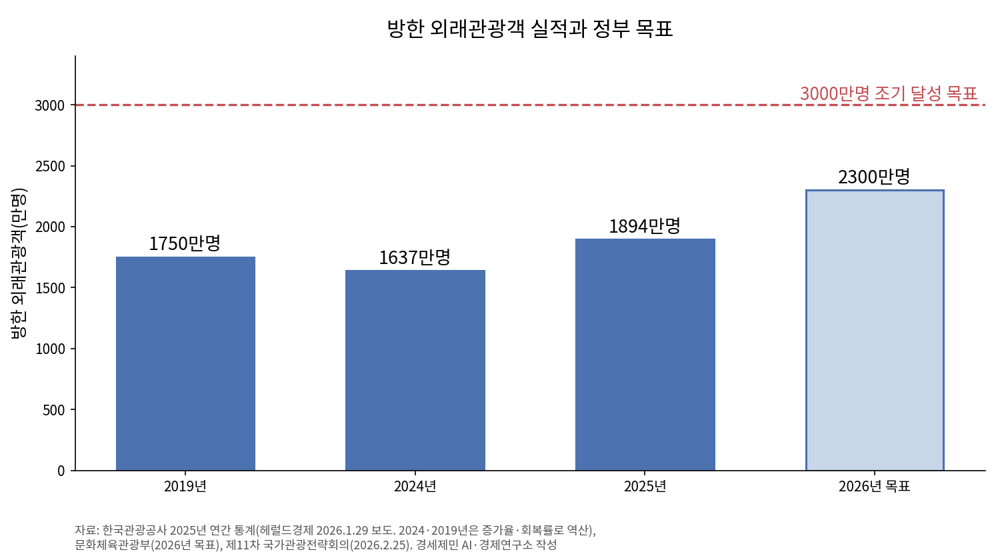

[글로벌 인천공항⑬] 인천공항 44% 외국인, 연말 끝나는 비자 특례 상설로
4월 외국인 51.3%로 첫 내국인 추월, 환승객 18.1%↑
비자 규제에 관광객 20%↓, 막힌 손님은 무비자국으로
경유 무비자 57개국 중국, 한시 조치에 기댄 한국
올해 2분기 인천공항 여객 100명 중 44명이 외국인이었다. 인천국제공항공사가 8월 13일 밝힌 외국인 비율 44.4%는 역대 최고다. 한 해 전 같은 분기보다 4.9%포인트 높다. 4월 한 달은 환승객을 포함해 외국인이 51.3%로 처음 내국인을 앞섰다.
공사는 중국·일본 방한객이 이끈 외국인 여객 증가를 실적 상승 요인으로 꼽았다. 미·이란 전쟁으로 중동 공항의 환승 기능이 약해져 상반기 환승객도 18.1% 늘었다. 정부가 바로 낮출 수 있는 문턱은 비자인데, 그 특례 넷이 12월 31일 함께 끝난다.
1. 승객 절반 가까이 외국인, 달라진 인천공항
방한객 숫자도 같은 흐름이다. 한국관광공사 관광통계를 보면 올해 상반기 방한 외래관광객은 1071만명이다. 야놀자리서치 집계로 21.3% 늘어 상반기 기준 역대 최대다. 외국인 카드 소비는 10조389억원으로 50.8% 늘었다.
기록은 6년 만에 바뀌었다. 방한객은 2024년 1637만명에서 지난해 1894만명으로 15.7% 불어 2019년 1750만명을 처음 넘어섰다. 문화체육관광부는 올해 목표를 2300만명으로 높였다.
정부는 2월 25일 제11차 국가관광전략회의에서 외래객 3000만명 시대를 앞당기겠다고 밝혔다. 상반기 방한객 열에 일곱은 인천·김포 공항으로 들어왔다. 목표가 커질수록 인천공항이 맞을 외국인도 는다.

2. 관광객 20% 넘게 줄이는 비자 규제
두 나라 사이를 오가는 사람은 중력처럼 경제 규모에 끌리고 거리에 막힌다. 비자는 거리처럼 이동을 막는 비용이다. 서류와 수수료, 심사 대기가 모두 값이어서 비자가 있으면 그만큼 먼 나라가 된다.
런던정경대 연구자는 2010년 미국지리학회 학술지 논문에서 이 비용을 쟀다. 1995~2005년 나라 쌍 자료를 썼다. 비자 규제는 두 나라 사이 여행을 평균 52~63% 줄였고 지역마다 차이가 컸다. 이듬해 논문은 한쪽만 비자를 요구해도 교역이 최대 19% 준다고 추정했다.
같은 연구자의 2017년 공동 연구에서는 비자를 요구하면 그 나라로 가는 관광객이 20% 넘게 줄었다. 교역과 투자 감소 폭은 앞선 연구들보다 작았다. 막힌 관광객 일부는 비자 없는 나라로 발길을 돌렸다.
수수료만 없앤 조치에도 사람이 움직였다. 중국·베트남 등 6개국 단체관광객은 15달러 비자 수수료를 면제받는다. 2025년 단체비자로 들어온 외국인은 약 79만명으로 39% 늘었다. 법무부는 수수료 면제가 유일한 원인은 아니어도 일정 부분 기여했다고 봤다.
3. 경유 무비자 넓히는 중국, 시한부 특례의 한국
중국은 경유 무비자를 계속 넓힌다. 중국 국가이민관리국은 8월 20일 240시간 경유 무비자 대상국을 57개국으로 늘렸다. 제3국행 연결 교통권이 있으면 베이징과 상하이 등 65개 개항지로 들어와 정해진 지역 안에서 열흘까지 머문다.
경유 무비자는 갈아타는 손님을 붙잡는 장치다. 환승객에게 도시를 열어 주는 공항이 환승지로 선택받는다. 한·중·일이 묶인 동북아에서 인천과 베이징, 상하이는 같은 손님을 두고 다툰다.
한국 조치는 기한이 있다. 중국 단체 무비자와 전자여행허가(K-ETA) 한시 면제, 인도네시아 단체 무비자, 6개국 단체비자 수수료 면제가 모두 12월 31일 끝난다. 중국 단체 무비자는 중국이 한국인에게 주는 무비자와 기한을 맞췄다.
2025년 9월 29일부터 올해 6월 21일까지 무비자 입국자는 10만4369명, 무단이탈은 21명(0.02%)이었다. 단체전자비자 입국은 4.9배인 51만2998명이다. 여행신문은 분기 평균 이탈률 2%를 넘으면 지정을 취소하는 제재 탓에 여행사가 전자비자를 선호했다고 전했다.
4. 상시 제도와 권역 관문, 남은 과제
연장 결정은 미리 나와도 현지 공지는 늦었다. 정부는 2025년 9월 25일 K-ETA 한시 면제를 1년 늘린다고 밝혔다. 하지만 주미국대사관 공지는 만료 이틀 전인 12월 29일에야 올라왔고, 그사이 교민 사회는 혼선을 겪었다. 중국 단체 무비자 연장도 만료 일주일 전인 6월 23일 공지됐다.
법무부는 2025년 7월 단체 무비자 상시화도, K-ETA 면제 추가 연장도 검토한 바 없다고 밝혔다. 두 달여 뒤 정부는 K-ETA 연장을 발표했다. 0.02% 이탈률은 상시화 논의의 출발점이지만, 단체관광객 가운데 무비자 이용 비중이 16.9%에 그쳐 검증 범위가 아직 좁다.
기한 없는 제도는 이미 효과를 냈다. 법무부는 3월 16일 자동입국심사 대상을 유럽연합(EU)·솅겐 협정국과 캐나다까지 42개 국가·지역으로 넓혔다. 2025년 11월부터 올해 8월까지 이들 나라 입국자 38.5%가 자동심사대를 썼다.
야놀자리서치 집계로 상반기 지방공항 입국 외래객은 196만3000명으로 2019년보다 42.2% 늘었다. 문화체육관광부는 9월 김해·대구·청주·양양·무안 공항을 관문 삼아 5대 관광권을 정하고 2027년 정부 예산안 기준 935억원을 넣기로 했다.
네 조치가 끝나는 12월 31일 전에 비자 문을 기한 없는 제도로 열어 둬야 한다. 중국 단체 무비자는 중국의 한국인 무비자와 묶어 함께 상시화를 협의할 일이다. 공항공사는 인천에 내린 손님을 항공·철도로 다섯 관광권까지 잇는 관문이 돼야 한다.
참고문헌
기관 자료
- 인천국제공항공사, 「인천공항, 개항이후 처음으로 상반기 국제여객 세계 1위 달성」(보도자료), 2026년 8월 13일. https://www.airport.kr/bbs/co_ko/84/139530/artclView.do
- 인천국제공항공사, 「인천공항공사, 하계 휴가철 특별교통대책 시행으로 세계 최고 수준 공항 서비스 제공」(보도자료), 2026년 7월 27일. https://www.airport.kr/bbs/co_ko/84/139494/artclView.do
- 관계부처합동, 「'케이-관광, 세계를 품다', 외래객 3천만 명 시대 앞당긴다」(제11차 국가관광전략회의), 정책브리핑(해양수산부 게시), 2026년 2월 25일. https://www.korea.kr/briefing/pressReleaseView.do?newsId=156745968
- 문화체육관광부, 「2026년 상반기 방한 외국인 관광객 1071만 명 돌파!」(한국관광공사 관광통계·한국문화관광연구원 외래관광객조사·한국관광 데이터랩), 정책브리핑, 2026년 7월 31일. https://www.korea.kr/multi/visualNewsView.do?newsId=148969151
- 문화체육관광부, 「지방공항 중심 5대 관광권 선정, 대한민국 관광성장지도 새로 그린다」(보도자료), 2026년 9월 10일. https://www.mcst.go.kr/kor/s_notice/press/pressView.jsp?pSeq=22706
- 법무부, 「"외국인 입국 빠르고 편리하게…" 「케이(K)-자동입국심사」 이용 크게 늘었다」(보도자료), 2026년 10월 1일. https://www.immigration.go.kr/bbs/immigration/214/610933/artclView.do
- 법무부, 「법무부, 중·베트남 등 6개국 단체비자 수수료 면제 '2026년 말까지' 연장」, 2026년 7월 1일. https://www.immigration.go.kr/bbs/immigration/214/607993/artclView.do
- 법무부, 「「인도네시아 단체관광객 한시 무사증」 제도 시행」, 2026년 5월 27일. https://www.moj.go.kr/bbs/moj/182/606928/artclView.do
- 법무부, 「인도네시아 단체관광객 무사증 제도 첫 입국자 맞이」(보도자료), 2026년 6월 22일. https://www.immigration.go.kr/bbs/immigration/214/607689/artclView.do
- 법무부, 「[법무부 알림] '정부, 中 단체관광객 무비자 상시화' 검토 관련」, 2025년 7월 7일. https://www.immigration.go.kr/bbs/immigration/214/596834/artclView.do
- 주칭다오 대한민국총영사관, 「중국 단체관광객 무사증입국 허가제도 연장 시행」, 외교부, 2026년 6월 23일. https://www.mofa.go.kr/cn-qingdao-ko/brd/m_24477/view.do?seq=1357024
- 주미국 대한민국대사관, 「[K-ETA] 대한민국 전자여행허가제(K-ETA) 한시 면제 기간연장 알림 (26.12.31까지 추가연장)」, 외교부, 2025년 12월 29일. https://www.mofa.go.kr/us-ko/brd/m_4475/view.do?seq=1345959
연구 논문과 보고서
- Neumayer, E., "Visa Restrictions and Bilateral Travel", 『The Professional Geographer』 62(2), 2010년, pp.171-181. https://doi.org/10.1080/00330121003600835
- Neumayer, E., "On the detrimental impact of visa restrictions on bilateral trade and foreign direct investment", 『Applied Geography』 31(3), 2011년, pp.901-907. https://doi.org/10.1016/j.apgeog.2011.01.009
- Czaika, M., & Neumayer, E., "Visa restrictions and economic globalisation", 『Applied Geography』 84, 2017년, pp.75-82. https://doi.org/10.1016/j.apgeog.2017.04.011
- 야놀자리서치, 「BRIEF Vol.14 2026년 상반기 한국 인·아웃바운드 관광 실적 분석」, 2026년 8월 6일. https://www.yanolja-research.com/brief/view/867?lang=kr
언론 보도
- 쑨펑청, "中国240小时过境免签'朋友圈'扩展至57国"(중국 국가이민관리국 공고), 신화망, 2026년 8월 20일. https://www.news.cn/politics/20260820/ee6f464647d34dfd90c61644d9b1bee0/c.html
- 김다미, "중국인 단체관광객 무비자, 연말까지 간다", 여행신문, 2026년 6월 29일. https://www.traveltimes.co.kr/news/articleView.html?idxno=416057
- 이정민, "대통령 주재 '국가관광전략회의' 무슨 말 나왔나", 트래블데일리, 2026년 2월 25일. https://www.traveldaily.co.kr/news/articleView.html?idxno=70111
- 함영훈, "6년만에 코로나 탈출, 작년 외래객 1894만명, 회복률 108%"(한국관광공사 2025년 연간 통계 발표 보도), 헤럴드경제 미주판, 2026년 1월 29일. https://www.heraldk.com/article/2026012918155213361
- 김현경, "지역 관광권 조성·제도 혁신…'글로벌 관광 대국으로'"(제10차 국가관광전략회의 보도), 헤럴드경제 미주판, 2025년 9월 25일. https://www.heraldk.com/article/2025092500251419968
- 김형재, "이달 말 종료 앞둔 한국 전자여행허가 면제…공지 없어 혼선", 미주중앙일보, 2025년 12월 18일. https://www.koreadaily.com/article/20251218221053077
사진 출처
- [도표1] 경세제민 AI·경제연구소 작성. 자료는 위 한국관광공사 연간 통계 보도와 제11차 국가관광전략회의 자료(2024·2019년은 증가율·회복률로 역산)
※ 이 기사는 AI 프로그램 클로드를 활용해 작성했습니다.
관련기사
- 착륙료 10년·계류장 25년 묶은 인천공항, 싼 값이 항공사를 붙잡는가
- 두바이 막힌 사이 유럽 환승 63%↑, 인천공항 빌린 환승객 붙잡아야
- 나리타 환승 6%↓ 인천 20%↑, 도쿄와 다투는 일본발 미주 환승
- 환승률 9.51% 인천공항, 허브는 10%를 지켜야
저작권자 © AI경세제민 무단전재 및 재배포, AI학습 및 활용 금지